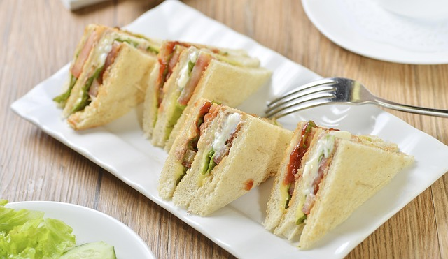
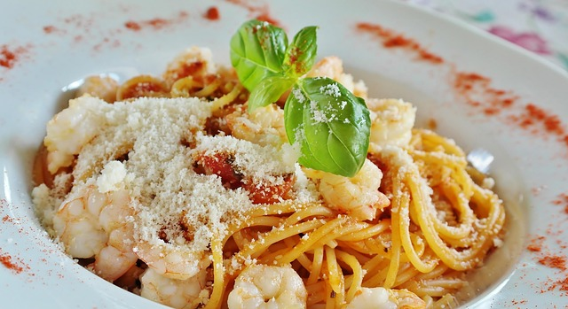
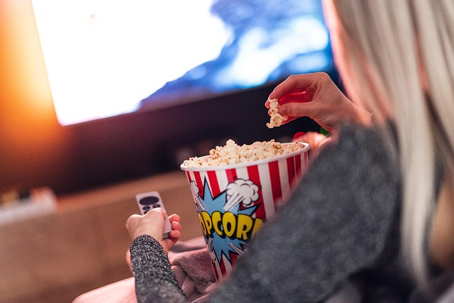
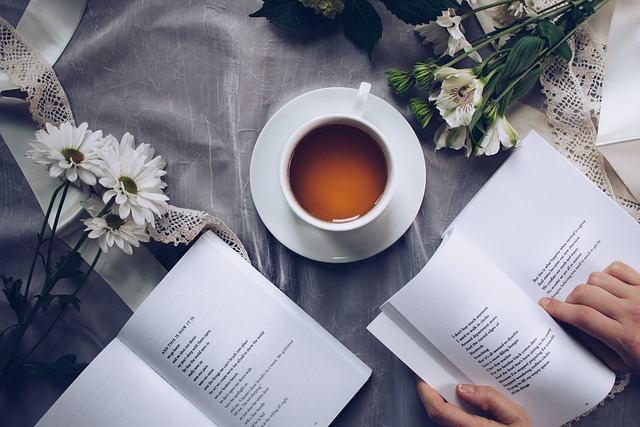

Do you prefer sandwiches or pasta?


Do you prefer winter or summer?

Do you prefer watching movies or reading books?


Answer these questions below to find out if you are more of a "morning" person or a "night" person!



